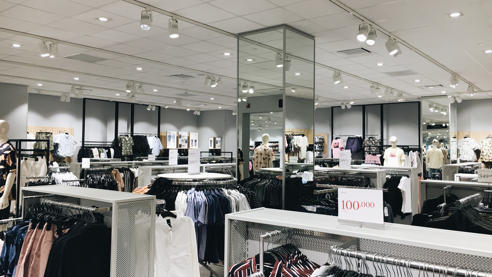

Federico Quarchioni es un gerente financiero con más de 10 años de experiencia en empresas de diferentes industrias. Es un experto en análisis financiero, planificación estratégica y gestión de riesgos. En su actual cargo como gerente financiero de Rocco Clothes, es responsable de liderar el equipo financiero en la toma de decisiones que permitan a la empresa alcanzar sus objetivos.
Rocco Clothes: Ropa urbana para todos

Rocco Clothes es una empresa Argentina con más de 30 años de experiencia en el mercado textil y de confecciones. Trabajamos para satisfacer los estándares de calidad de todos nuestros. Somos specialistas en el diseño, desarrollo, confección y distribución de prendas de vestir. Contamos con un equipo humano especializado, innovador y comprometido y estamos encaminados a consolidarnos como una empresa competitiva y vanguardista.